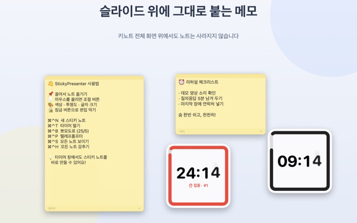
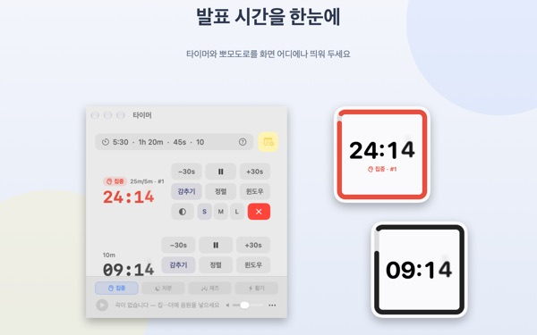
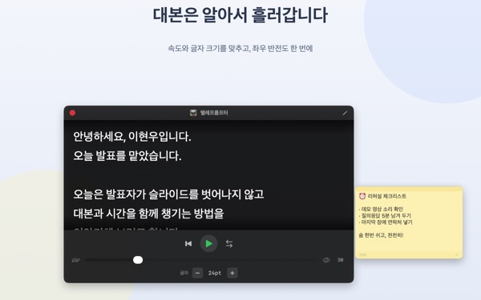
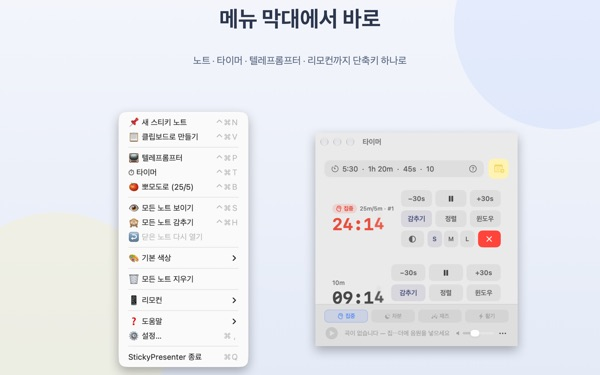

대본과 남은 시간을
슬라이드 위에
Keynote를 전체 화면으로 켜도 스티키 노트와 타이머가 그 위에 그대로 떠 있습니다. 발표 앱의 포커스를 빼앗지 않아 슬라이드 넘기기도 그대로입니다.
모든 기능이 무료입니다. macOS 14 이상.

슬라이드 위에 띄워 보세요
앱과 같은 방식으로 시간을 적어 보세요. 15s를 누르면 끝나 갈 때 위젯이 어떻게 알려 주는지 바로 볼 수 있어요.
발표 중에 대본과 시계를 어디에 두나요?
발표자 노트는 화면을 하나 더 차지하고, 손목시계를 보면 청중이 눈치챕니다. 메모지를 노트북에 붙였다가 떨어진 적도 있을 거예요. StickyPresenter는 대본과 남은 시간을 슬라이드 바로 위, 내 눈이 가는 자리에 붙여 둡니다.
남은 시간을 흘깃 보면 압니다
정사각형 위젯이 화면 구석에서 남은 시간을 보여 줍니다. 끝이 다가오면 붉게 바뀌고, 끝나면 알림음과 깜빡이는 테두리로 알려 줍니다.
시간은 5:30, 1h 20m처럼 편하게 적고, 25/5라고 쓰면 집중과 휴식을 오가는 뽀모도로가 됩니다. 타이머를 별도 창으로 열면 화면 공유나 AirPlay에 그 창만 띄울 수 있어요.

카메라를 보면서 대본을 읽습니다
텔레프롬프터가 맞춰 둔 속도로 대본을 올려 주고, 끝에 닿으면 저절로 멈춥니다. 대본을 복사한 뒤 ⌘⌃P를 누르면 그 글로 바로 열립니다.
반사 유리를 쓰는 프롬프터 장비를 위한 좌우 반전도 있고, 속도와 글자 크기는 다음에도 그대로입니다.

슬라이드에서 손을 떼지 않습니다
메뉴 막대에서 조용히 동작해 Dock 아이콘도 따로 챙길 창도 없습니다. ⌘⌃N 새 노트, ⌘⌃T 타이머처럼 단축키가 전체 화면 발표 중에도 바로 듣습니다.
무대 위에서는 무료 iPhone 앱 Remote Controller for Sticky로 타이머를 시작하고 멈추고, 슬라이드를 가리는 위젯을 옮길 수 있습니다.

시작은 세 단계면 됩니다
- 1
앱을 엽니다
메뉴 막대에 노트 아이콘이 생기고, 처음 한 번 사용 가이드가 열립니다.
- 2
노트와 타이머를 띄웁니다
대본을 복사해
⌘⌃V를 누르고, 타이머 칸에 발표 시간을 적습니다. - 3
슬라이드를 전체 화면으로
노트와 타이머는 그 위에 그대로 남아 있습니다.
단축키와 시간 입력
- ⌘⌃N
- 새 스티키 노트
- ⌘⌃V
- 복사해 둔 글로 새 노트
- ⌘⌃T
- 타이머 보이기, 감추기
- ⌘⌃B
- 뽀모도로 시작 (25분 집중, 5분 휴식)
- ⌘⌃P
- 텔레프롬프터
- ⌘⌃S · ⌘⌃H
- 모든 노트 보이기, 감추기
- 10
- 숫자만 쓰면 분 (10분)
- 5:30 · 1:15:00
- 분:초, 시:분:초
- 1h 20m · 45s
- 단위와 함께
- 25/5
- 집중/휴식을 멈출 때까지 반복
단축키는 모두 Command(⌘)와 Control(⌃)을 함께 누르고, 다른 앱을 쓰는 중에도 동작합니다. 타이머는 최대 99:59:59까지 맞출 수 있습니다.
자주 묻는 질문
정말 무료인가요?
네. 모든 기능이 무료이고, iPhone 앱 Remote Controller for Sticky도 별도 무료 앱입니다. 마음에 드셨다면 설정에서 개발자에게 팁을 남길 수 있지만, 팁으로 열리는 기능은 없습니다.
화면 공유나 미러링에 타이머만 보여 줄 수 있나요?
네. 타이머 줄의 윈도우 버튼으로 타이머를 일반 창으로 열면, 화면 공유나 AirPlay의 창 목록에 나타나 그 창만 골라 보여 줄 수 있습니다.
타이머 위젯을 감췄는데 어디 있는지 모르겠어요.
타이머 창에서 그 타이머 줄에 마우스를 올리면 위젯 자리가 점선으로 표시됩니다. 정렬 버튼을 누르면 타이머 창 옆으로 다시 불러옵니다.
실수로 노트를 닫았어요.
메뉴 막대의 '닫은 노트 다시 열기'에서 최근 20장까지 되살릴 수 있습니다. 노트는 적는 즉시 저장되어 앱을 다시 켜도 같은 자리에 돌아옵니다.
단축키가 듣지 않아요.
사용 가이드의 단축키 표에서 '다른 앱이 사용 중'으로 보이는 단축키는 다른 앱이 먼저 쓰고 있는 것입니다. 그 앱을 끄면 다시 동작합니다. 손쉬운 사용 권한은 필요하지 않습니다.
카멜레온 테마가 화면 기록 권한을 물어요.
카멜레온은 위젯 뒤 화면의 색을 읽어 위젯 색을 맞추는 테마라 그 권한이 필요합니다. 화면을 저장하거나 보내지 않습니다. 권한 없이도 시스템, 밝게, 어둡게 테마는 그대로 쓸 수 있습니다.
배경음악은 어떻게 넣나요?
타이머 창 아래 음악 막대에서 분위기(집중, 차분, 재즈, 활기)를 고르면 앱이 분위기별 폴더를 만들어 둡니다. 그 폴더에 음원을 넣으면 타이머와 함께 차례로 재생됩니다. 음원은 앱에 들어 있지 않습니다.
iPhone 리모컨이 Mac을 찾지 못해요.
순서대로 확인해 주세요. Mac에서 StickyPresenter가 켜져 있는지(메뉴 막대 아이콘), 두 기기가 같은 Wi‑Fi인지(게스트 네트워크나 셀룰러는 안 됩니다), iPhone과 Mac 양쪽 설정의 개인정보 보호 및 보안 ▸ 로컬 네트워크에서 허용했는지, VPN이 꺼져 있는지.
리모컨 연결 코드가 맞지 않는다고 나와요.
Mac의 메뉴 막대 ▸ 리모컨에 지금 떠 있는 네 자리 연결 코드를 넣어 주세요. '연결 코드 새로 만들기'를 눌렀다면 새 코드만 맞습니다. 한 번 연결하면 다음부터는 앱만 열어도 붙습니다.
다른 사람이 제 타이머를 조작할 수도 있나요?
코드를 알려 주지 않는 한 할 수 없습니다. Mac은 코드가 맞는 리모컨만 받아들이고, 같은 네트워크 안에서 암호화된 직접 연결로만 주고받습니다. 코드를 보여 준 적이 있다면 메뉴 막대 ▸ 리모컨에서 '연결 코드 새로 만들기'나 '기억한 리모컨 지우기'를 누르세요.
노트와 대본은 어디에 저장되나요?
이 Mac에만 저장됩니다. 계정도 광고도 없고, 익명 사용 통계와 직접 보내신 의견 말고는 인터넷으로 나가는 것이 없습니다.
궁금한 점이나 버그, 기능 제안은 mizzking75@gmail.com로 보내 주세요.